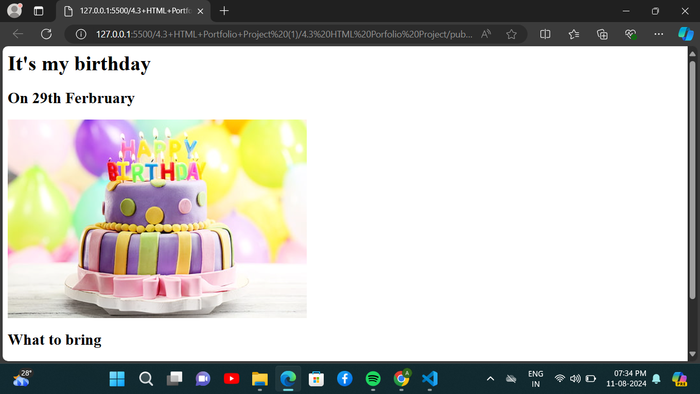

<!-- TODO 1: Create the HTML Boilerplate -->

<!-- TODO 2: Add Your previous projects' HTML into the public folder -->

<!-- TODO 3: Take screenshots of your project previews and add the images to the images folder -->

<!-- TODO 4: Add titles/subtitles etc. -->
 <h1>My Portfolio</h1>

<!-- TODO 5: Add a link to the project pages --><h2>Birthday invite</h2>
 <a href="./public/birthday.html">click here </a>
 
 <h2>Movie Ranking</h2>
 <a href="./public/movie-ranking.html">click here </a>
 

<!-- TODO 6: Add images to show the project previews
HINT for TODO 6: You can use the height attribute set to 200 to make the image smaller:
https://developer.mozilla.org/en-US/docs/Web/HTML/Element/img#attr-height -->

<!-- TODO 7: Add the Contact Me and About Me page links -->
 contact me for further queries
 <a href="./public/contact.html">contact me</a>
